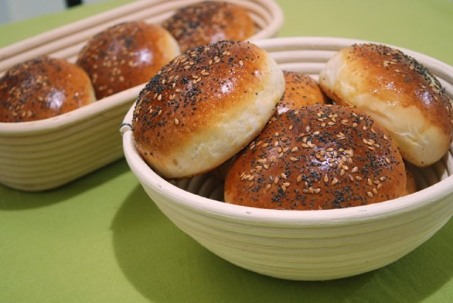

Burger brioche

Description
There are many types of hamburger buns, but I personally like the
brioche type the most.
After trying this tender and juicy bread recipe, you will not want
to eat hamburgers in another type of bread.
Ingredients
- 500g strong white bread flour
- 1 tsp salt
- 2 tsp fas-action dried yeast
- 2 tsp caster sugar
- 100g unsalted butter, softened
- 2 medium eggs, beaten
- 50ml tepid milk
- 225-250 tepid water
Steps
- Combine the flour, salt, yeast and sugar in a large mixing bowl. Rub the softened butter until the mixture looks like fine breadcrumbs.
- Make a well in the centre and add the eggs and milk. Start to mix together to make a dough, gradually adding the tepid water as you go, until you have a soft dough. It will be quite sticky and shaggy. Tip the dough out onto a lightly floured surface and knead and stretch it for 8-10 minutes until it feels smooth, bouncy and stretchy. Don't be tempted to add too much additional flour; the stickiness of the dough will lessen a little as you work it.
- Return the dough to the bowl, cover with oiled clingfilm and leave to rise for 2-3 hours until doubled in size.
- Knock the dough back, knead again for a minute or two, then divide into 12 evenly sized pieces. Shape into round domed rolls and put them onto 2 lined baking trays. Cover with oiled clingfilm and leave to rise for around 1 hour or until roughly doubled in size again. The rolls should feel soft and pillowy when prodded lightly.
- Preheat the oven to 200°C, fan 180°C, gas 6, with a shallow baking tin on the bottom shelf or oven floor.
- For the glaze, beat the egg with a pinch of salt and 1 teaspoon water. Brush the glaze onto the buns and scatter with sesame seeds. Pour some water into the hot baking tin in the oven to create steam (to give your burger buns a softer crust). Bake the buns for 20-25 minutes, until the buns are richly golden brown and the undersides sound hollow when tapped. Swap the trays over halfway through cooking.
- Cool the buns on wire racks. Lightly toast them on the barbecue before filling with your burger and trimmings.
<<< back